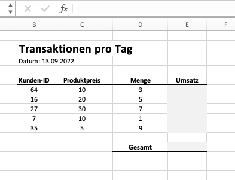
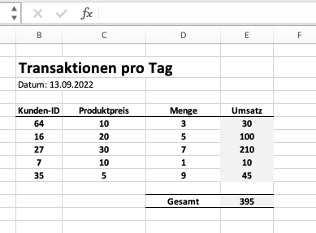
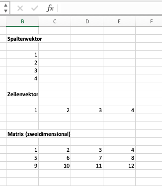

NumPy: der Zahlenakrobat
Inhalt
NumPy: der Zahlenakrobat¶
Numpy ist eines der wichtigsten Module in Python und ein Grund für das rasante Wachstum der Programmiersprache. Es ermöglicht schnelle Berechnungen mit Vektoren und Matrizen in kompakter Form. Für viele von Ihnen mag sich dies zunächst eher abschreckend denn überzeugend anhören - schließlich beschäftigen wir uns nicht mit linearer Algebra und die meisten von ihnen haben dies auch mit Sicherheit nicht vor.
Jedoch ist es so, dass es sehr viele Anwendungsfälle gibt, in denen wir mit Vektoren und Matrizen rechnen müssen (oder wollen). Jede Tabelle mit Daten kann als Matrix angesehen werden. Wir können uns z.B. jede Spalte in Excel als Vektor vorstellen und jedes Tabellenblatt als Matrix. Für den Fall das Vektor oder Matrix mit Zahlen1 befüllt sind, ist numpy das ideale Werkzeug. Aus diesem Grund basieren auch nahezu alle Python-Module für den Bereich Datenanalyse auf Numpy (z.B. auch das von uns später viel genutzte Modul pandas).
Einführendes Beispiel¶
Lassen Sie uns mit einem anschaulichen Beispiel beginnen, um die Vorteile der Bibliothek vorzustellen.
Nehmen wir an, das Unternehmen Super Sales GmbH hätte folgende Transaktionsdaten zu ihren täglichen Verkäufen:

Gegeben ist die Kunden-ID, der Preis des Produktes und die verkaufte Produktmenge. Wir möchten nun (i) den Umsatz je Kunde sowie (ii) den gesamten Tagesumsatz berechnen. In Excel ist dies sehr einfach möglich, in dem wir eine neue Spalte Umsatz erstellen, in der wir die Spalte Preis mit der Spalte Menge multiplizieren (Umsatz je Kunde). Von dieser neuen Spalte können wir dann die Summe nehmen (Tagesumsatz).
Unsere Tabelle sieht dann wiefolgt aus:

Stellen wir uns nun vor, wir wollen dieselbe Berechnung in Python durchführen. Wir könnten diese Berechnung mit “pure” Python umsetzen.
# Daten
preis = [10, 20, 30, 10, 5]
menge = [3, 5, 7, 1, 9]
# Berchnungen
umsatz = [p*m for p, m in zip(preis, menge)]
umsatz
[30, 100, 210, 10, 45]
umsatz_gesamt = sum(umsatz)
umsatz_gesamt
395
Schaut man sich die Umsetzung im Detail an, dann stellen wir fest, dass wir quasi diesselbe Vorgehensweise durchgeführt haben, wie in Excel. Der Unterschied ist die Umsetzung:
Excel: wir ziehen eine Formel runter (E5 zu E10)
Python: wir schreiben eine For-Schleife
Der bis hierhin gewählte Ansatz in Python ist relativ umständlich und - obgleich dies für unsere Zwecke aktuell noch nicht so relevant ist - auch relativ ineffizient und langsam, d.h. die Berechnung dauert in Python relativ lange.
Genau hier kommt ein Vorteil von NumPy in Spiel. Beispiel in Numpy:
import numpy as np
preis = np.array([10, 20, 30, 10, 5])
menge = np.array([3, 5, 7, 1, 9])
umsatz = preis * menge
umsatz
array([ 30, 100, 210, 10, 45])
umsatz_gesamt = np.sum(umsatz)
umsatz_gesamt
395
Da Numpy für den Umgang mit Vektoren und Matrizen geschrieben wurde, ist die Umsetzung oft sehr viel einfacher und deutlich schneller. Auch liest sich der Code in unserem Beispiel einfacher, da wir tatsächlich preis \(\times\) menge schreiben können.
Diese Operation ist für den Datentyp list nicht im mathematischen Sinne definiert, wie wir hier sehen können.
cash = [-100, 50, 50, 20]
i = np.array([0.1, 0.2])
sum(cash/(1+i)**np.arange(len(cash)))
---------------------------------------------------------------------------
ValueError Traceback (most recent call last)
/var/folders/cj/9s881x057_12d_qyp3jcmb380000gn/T/ipykernel_75657/1812792334.py in <module>
1 cash = [-100, 50, 50, 20]
2 i = np.array([0.1, 0.2])
----> 3 sum(cash/(1+i)**np.arange(len(cash)))
ValueError: operands could not be broadcast together with shapes (2,) (4,)
preis = [1,2,3]
menge = [4,5,6]
preis * menge
---------------------------------------------------------------------------
TypeError Traceback (most recent call last)
/var/folders/cj/9s881x057_12d_qyp3jcmb380000gn/T/ipykernel_75657/1620228902.py in <module>
1 preis = [1,2,3]
2 menge = [4,5,6]
----> 3 preis * menge
TypeError: can't multiply sequence by non-int of type 'list'
In Numpy können wir jedoch den Datentyp array definieren, für welchen die o.g. Operation mathematisch interpretiert wird und die einzelnen Elemente der jeweiligen Vektoren addiert werden.
Wir werden in diesem Kapitel nicht auf alle Möglichkeiten von numpy eingehen können. Jedoch sollen im Folgenden einige wesentliche Elemente der Bibliothek vorgestellt werden.
Grundlagen¶
Wir importieren die Bibliothek typischerweise mit folgender Zeile:
import numpy as np
Wie bereits im vorherigen Kapitel dargestellt, gäbe es weitere Wege die Bibliothek oder auch nur selektive Funktionen zu importieren. Mit Bezug auf numpy ist es jedoch anerkannter Standard, die Bibliothek zu importieren und dann die Kurzschreibweise np zu wählen. Es ist deshalb zu empfehlen, diese Konvention ebenfalls zu befolgen.
Kern des Moduls sind die sog. arrays, da dieser Datentyp viel “Fähigkeiten” hat, die wir im Rahmen unserer Datenanalyse brauchen.
Wir definieren arrays immer mit dem Befehl
>>> np.array()
Wir können damit Vektoren und Matrizen (und auch mehrdimensionale Tensoren) erzeugen.
Oft erzeugen alleine die Begriffe Vektor und Matrix Panik und suggerieren, dass wir es mit komplexen mathematischen Objekten zu tun haben.
Schauen wir uns zunächst die drei geläufigsten Beispiele
Spaltenvektor
Zeilenvektor
Matrix (zweidimensional)
in Excel an:

Hier drei geläufige Beispiele:
Vektoren¶
Um Vektoren (stellen Sie sich Spalten oder Zelen in einer Exceldatei vor) zu erzeugen, machen wir folgendes:
spalten_vektor = np.array([1,2,3,4])
spalten_vektor
array([1, 2, 3, 4])
zeilen_vektor = np.array([[1,2,3,4]]) # Vorsicht: [[]]!
zeilen_vektor
array([[1, 2, 3, 4]])
matrix = np.array([[1,2,3,4], [5,6,7,8], [9, 10, 11, 12]])
matrix
array([[ 1, 2, 3, 4],
[ 5, 6, 7, 8],
[ 9, 10, 11, 12]])
Der hier erzeugte Spaltenvektor hat folgende Form
Wir nehmen also eine Liste und packen diese in einen
zeilen_vektor = np.array([[1,2,3,4]])
zeilen_vektor, zeilen_vektor.shape
(array([[1, 2, 3, 4]]), (1, 4))
Die Umsetzung ist relativ umständlich. In numpy können wir dies sehr viel einfacher umsetzen.
import numpy as np
zahlen = np.array(zahlen)
zahlen + 4
array([ 5, 6, 7, 104, 28, 20])
spalte1 = [1,2,3,4,5]
spalte2 = [6,7,8,9,10]
[a + b + 3 for a, b in zip(spalte1, spalte2)]
[10, 12, 14, 16, 18]
spalte1 = np.array([1,2,3,4,5])
spalte2 = np.array([6,7,8,9,10])
spalte1 + spalte2 + 3
array([10, 12, 14, 16, 18])
cash = np.array([-1000, 200, 500, 700])
i = 0.03
t = np.arange(len(cash))
kw = np.sum( cash/(1+i)**t )
np.__version__
'1.20.3'
import numpy_financial as npf
---------------------------------------------------------------------------
ModuleNotFoundError Traceback (most recent call last)
/var/folders/cj/9s881x057_12d_qyp3jcmb380000gn/T/ipykernel_75657/546631424.py in <module>
----> 1 import numpy_financial as npf
ModuleNotFoundError: No module named 'numpy_financial'
- 1
theoretisch können wir auch mit anderen Datentypen (z.B.
str) arbeiten. Der Haupteinsatzzweck sind jedoch numerische Operationen.